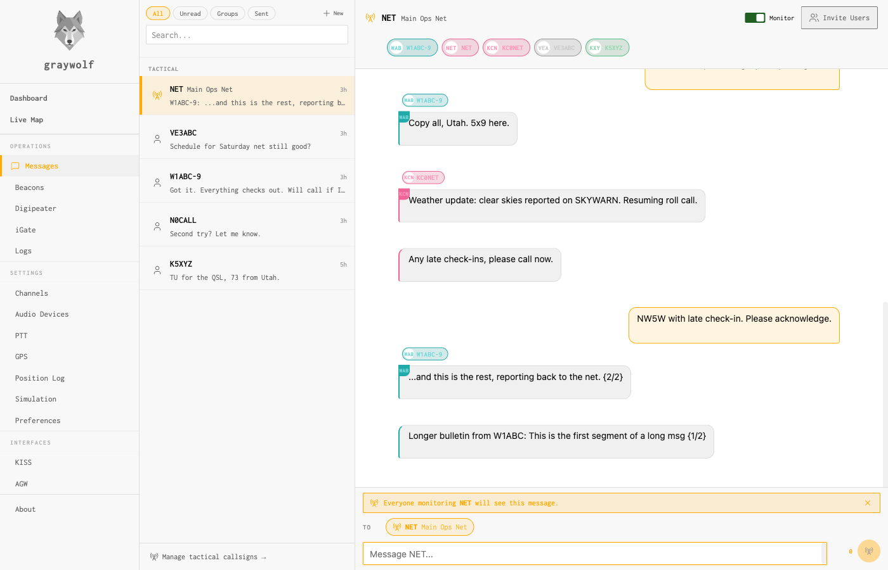
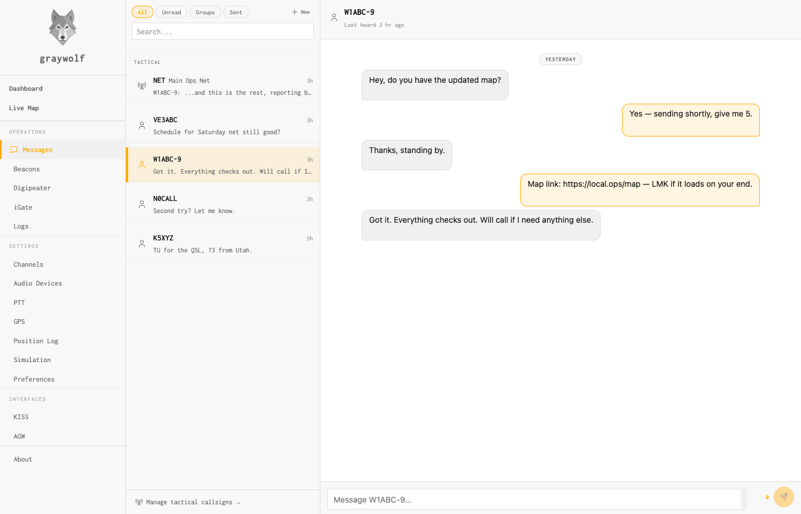
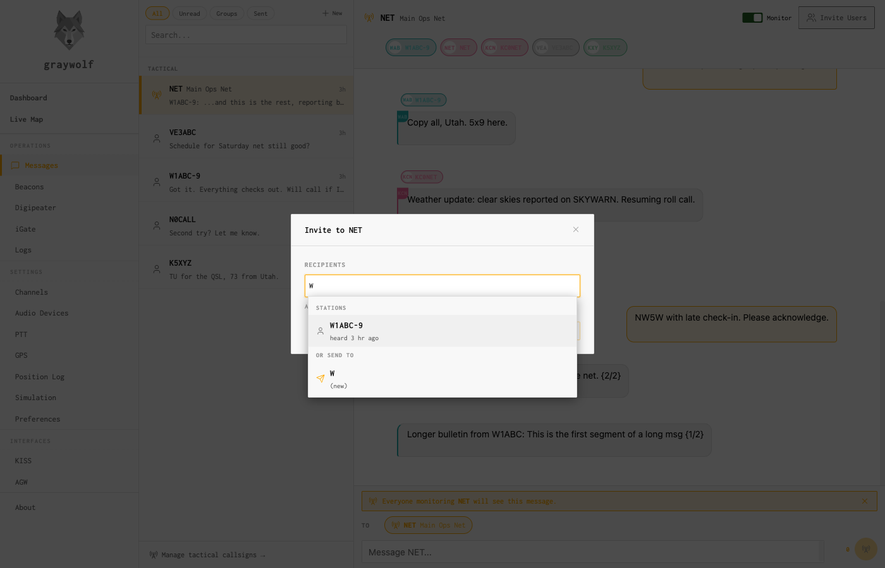

Messaging
SMS-style APRS messaging with DMs, tactical broadcasts, and invites
Graywolf’s messaging screen is a chat client that speaks APRS. Every outbound message is transmitted as an APRS11 text packet over RF (with an APRS-IS fallback when the peer is internet-only), and every APRS text frame graywolf hears is rendered as a bubble in the matching conversation. Messages longer than the 67-byte APRS cap are soft-split into numbered segments and reassembled on receive.

Two kinds of threads
| Kind | Addressing | ACK behavior |
|---|---|---|
| Direct (DM) | One peer callsign | APRS11 auto-ACK + reply-ack correlation, with retry until acked or timed out |
| Tactical broadcast | A tactical label (e.g. NET, EOC, TAC-NET) |
No ACKs — tactical traffic is one-to-many. The status pill shows “broadcast sent.” |
Direct messages
A DM is a normal APRS text packet addressed to a single callsign (optionally with SSID). Graywolf handles ACK correlation, retry, and reply-ack matching automatically. The bubble shows an ack-state pill: awaiting → acked / timeout / rejected.

Retry behavior is controlled by the Messages → Preferences pane. The default is 4 transmissions total (1 initial + 3 retries) at 30-second spacing with ±10% jitter — aligned with Xastir / UI-View32 / APRSdroid norms so graywolf isn’t noticeably more chatty than other stations sharing 144.39.
Tactical callsigns
A tactical callsign is a short label operators agree on ahead of an
event. Think NET, EOC, SKYWARN,
or TAC-NET. Every station that subscribes to the label
sees messages addressed to it, and every station subscribed can post
as the group. Membership is local — there is no server-side
roster. Graywolf derives participants from message history, not a
join table.
Manage your own subscriptions under Messages → Manage tactical callsigns → (bottom of the conversation list). Each row has a callsign, an optional friendly alias that only you see (“Main Ops Net,” “Club repeater coord”), and an enable toggle. Monitoring a tactical means its traffic is persisted, shown in the sidebar, and included in unread counts; disabling hides it without forgetting the history.
Inside a tactical thread, sender callsigns are rendered as color-coded chips above the bubble text so a fast-moving net is still readable at a glance. The participant chip row at the top is populated from observed senders.
Inviting stations to a tactical chat
A tactical chat works by convention: if you don’t know the label exists, you can’t subscribe. The Invite Users button in a tactical thread header gives you a way to nudge a remote station to subscribe without them needing out-of-band coordination.

Clicking Invite Users opens a modal with a chip picker. You can:
- Type a callsign and pick it from the autocomplete list
- Paste a comma- or whitespace-separated roster — valid
callsigns become chips, invalid tokens stay in the input with a
N added · M invalidhint - Remove a chip with
×, or delete the last chip with Backspace on an empty input
Cmd/Ctrl+Enter sends; plain Enter focuses the Send button so an accidental keystroke can’t fire N transmissions at once. Each chip gets its own state (sending, sent, or failed with a retry button) driven by the live SSE event stream so you see the tx governor pace the transmissions over RF in real time.
Wire format
An invite is a plain APRS11 DM with a strict body:
!GW1 INVITE <TACTICAL>
!GW1 is a version sigil reserved for graywolf protocol
extensions; the anchored regex
^!GW1 INVITE ([A-Z0-9-]{1,9})$ keeps casual messages
like “Invite Bob to the net” from ever matching. A valid
tactical label is 1–9 characters of
[A-Z0-9-]. The full wire body fits in 12–21 bytes,
well under the 67-byte APRS cap.
The invitee’s graywolf installation classifies the inbound
packet and renders it as an Accept bubble rather
than raw text. Clicking Accept subscribes the
station to the tactical locally and flips the bubble to
✓ Joined · Open TAC-NET →. The first
accept in a session auto-navigates into the newly joined thread.
Ignoring an invite is local-only — there is no server-side
“declined” state, and the invite persists as a normal DM
row.
Stations running other APRS software see the literal
!GW1 INVITE TAC-NET string and can join manually by
adding the tactical callsign to their client however their client
supports it.
Message preferences
Messages → Preferences controls transmission behavior. The fields that matter for most operators:
| Field | Default | Description |
|---|---|---|
retry_max_attempts |
4 |
Total transmissions on RF per DM (initial + retries). 1 disables retry. |
retry_backoff_seconds |
[30] |
Spacing between retries. Single-entry list = constant cadence; longer lists define a ladder. |
aprs_is_fallback |
true |
Fall back to APRS-IS when the peer is marked internet-only or RF retries exhaust. |
channel |
— | Radio channel used for outbound messages. |
Edge cases
-
Soft-split messages. DMs over 67 bytes are split
into numbered segments (
{1/2},{2/2}) and reassembled on receive. The inbound bubble shows the joined text. - Duplicate inbound. Packets arriving twice within the dedup window (same sender, same msgid, same text hash) persist once. This applies to invites too.
- Self-addressed DM. Graywolf refuses to send a DM to your own callsign. The invite modal filters your own callsign at chip-commit time.
-
Invite to an already-enabled tactical. The
Accept handler is idempotent; the response includes an
already_memberflag, and the bubble transitions to✓ Joinedwith a “Already a member” toast instead of the usual join toast.